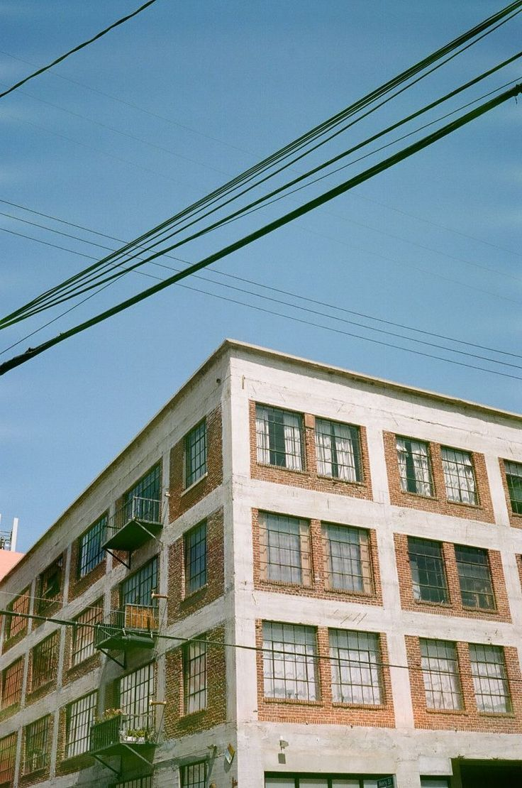

-
NTS Radio — это онлайн-радиостанция и медиаплатформа, основанная в Лондоне.
Основана в апреле 2011 года Феми Адееми «для международного сообщества любителей музыки».
Вещает из студий в Лондоне и Лос-Анджелесе, а также проводит удалённые трансляции по всему миру.
Производит разнообразный спектр живых радиошоу, цифровых медиа и мероприятий.
По словам Института современных искусств, NTS Radio — это семья единомышленников, dedicated к поддержке захватывающей музыки и культуры через онлайн-радио и события.
-
MyAnalogJournal Заг Эрлат — фотограф и коллекционер музыки родом из Турции. В 2013 году запустил канал My Analog Journal, где он и единомышленники делятся уникальной музыкой со всего света.
Румынский, польский, болгарский джаз-фанк, бразильская босанова, турецкий рок, японский поп и фьюжн, арабские и итальянские ритмы, болливудский грув и много чего еще можно открыть для себя.
Важная деталь, все участники играют исключительно на виниловых пластинках, а иногда и с аудио кассет.